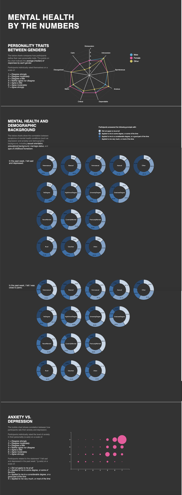

Spring of 2019 I took INFO3300: Data-Driven Web Pages. I worked with a small group of Information Science students to develop a data visualization on mental health.
Our visualizations aim to show correlations between symptoms of mental health conditions (such as depression, anxiety, and stress), personality traits, and demographic data among participants of the DASS survey (http://www2.psy.unsw.edu.au/dass/). Throughout our visualizations, we hope to tell the narrative of commonalities amongst certain groups of people in their own identities (including personality and mental health).
Design Process
Spider graph
We chose a spider graph for showing this because the data was multivariate against a quantitative category. We mapped the genders on one graph to communicate the difference in self-identified personality traits between the genders and allow for easy comparison between each. “Males” were colored blue, “females” pink, and “other” in yellow. This was an interesting choice to make because it felt like we were abiding by gender norms, yet these colors communicated each gender clearly, so we left it at that. We chose colors that had the same amounts of greyness/value so that they looked cohesive together. The quantitative personality traits were mapped along the axels of the spider chart, which is conventional for a spider chart. The levels of the chart corresponded to the responses, so a scale from 1-7. We added a legend so that the viewer could understand what each of the colors meant, as well as a legend for the meaning of the 1-7 scale.
Donut graph
For the donut graphs, the key was making a visualization that maps categories of people in a sub-dataset to a scale of 1-4 in the mental health questions sub-dataset. For this, a pie chart or a donut chart for each category of person (i.e. high school degree versus graduate degree) was an initial thought in brainstorming. Donut charts allowed us to center the heading for each chart, therefore creating less overcrowding once more donuts were added. It was also a more challenging endeavor, given that we have not gone over creating arcs before. As for colors to represent each 1-4 answer to a mental health question, we chose a common scheme we’ve seen in class: increased saturation + difference in luminosity to show increasing density. This shows distinguishable differences while still indicating to the user increased density with increased saturation, as our answers increase from 1 to 4 (in contrast, a first color palette attempted was 4 different colors, which made it much more difficult to interpret). Additionally, the groups of demographics (i.e. education, sexual orientation, etc.) were put in line together and separated by question so that interpreting the visualization was easier for the user (rather than grouping by demographics, each with 3 questions in a line). A shadow was also added to all elements in this visualization to create dimension to the page as the excess of donuts could get visually overwhelming. Marks used were arcs in the donut graphs, while channels used were saturation + luminosity, as well as area (in the sense of length for an arc).
Bubble chart
For the bubble chart, we were not able to complete all the correlations we had hoped to graph. However, we did end up finding an interesting correlation between anxiety and depression and showed this by scaling bubbles larger the more participants responded having high anxiety in their personality and feeling high levels of depression in the past week. Although anxiety and depression can sometimes be seen as opposite feelings, our visualization shows that many people who feel one do indeed feel the other. We chose a pink color to remain consistent with our colorful . Because we learned in class that area was not normally a good metric to show distinctions in size, we made size differences largely noticeable and decided it was an okay channel to use given that we were only showing correlation (for example, exact differences between smaller bubbles were not as important for us to show).
Final Product
We extracted data from responses to the DASS Survey and used D3.js to create the visualization.
